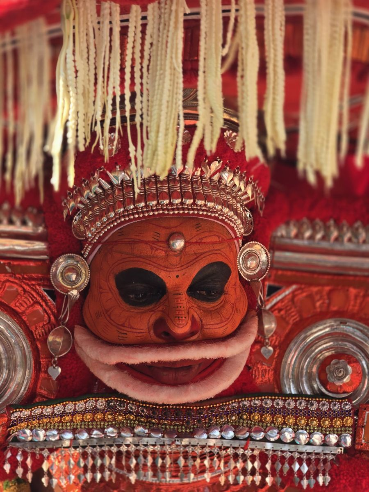
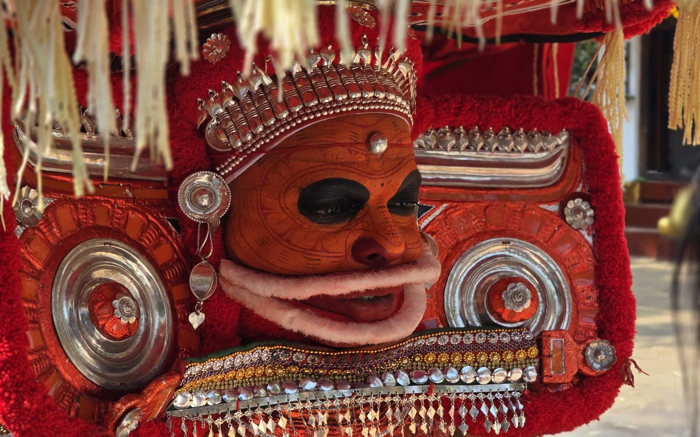
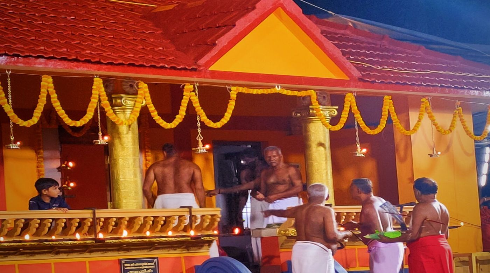
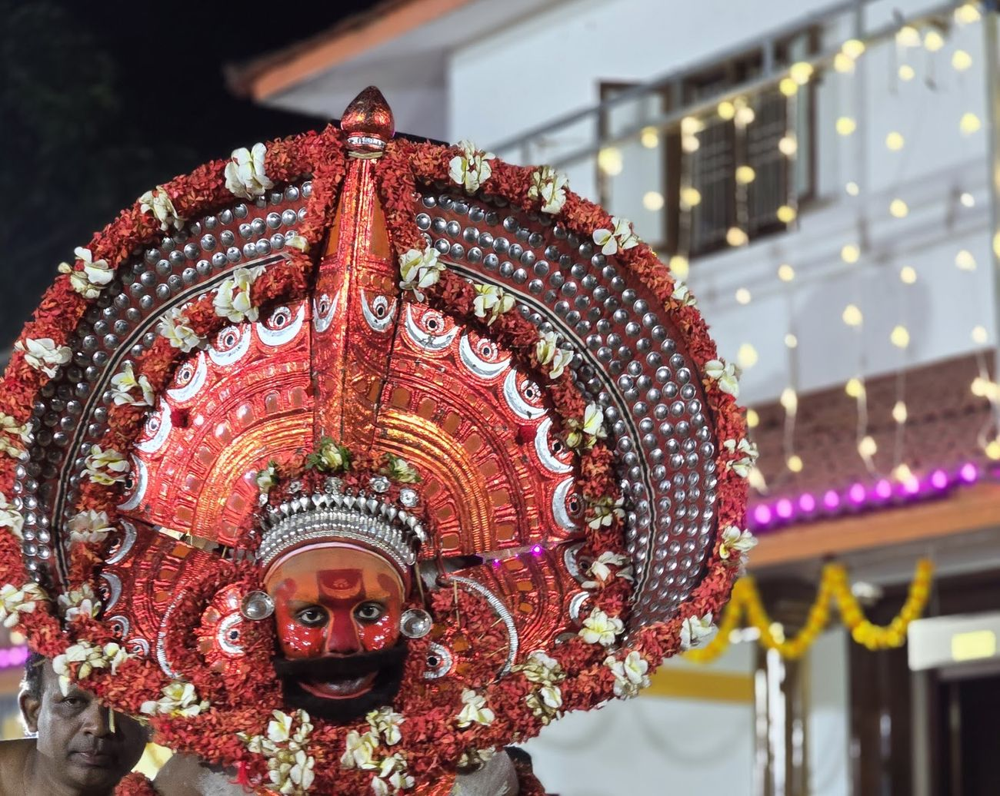
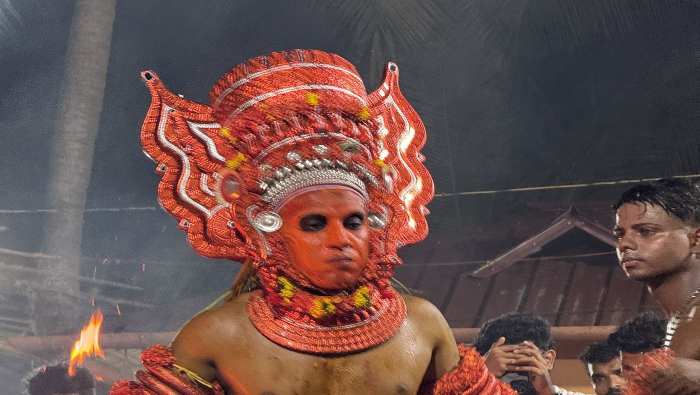
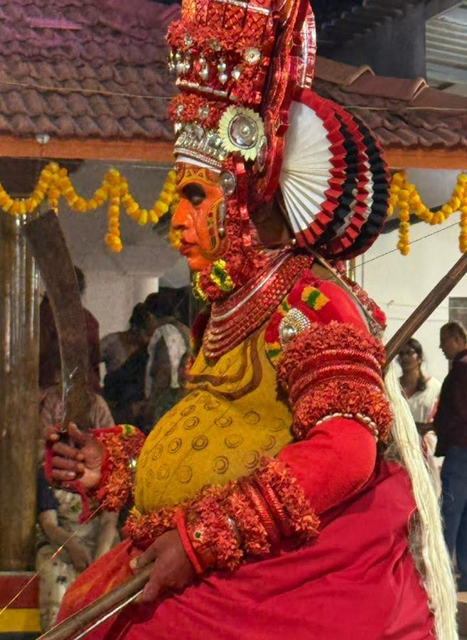
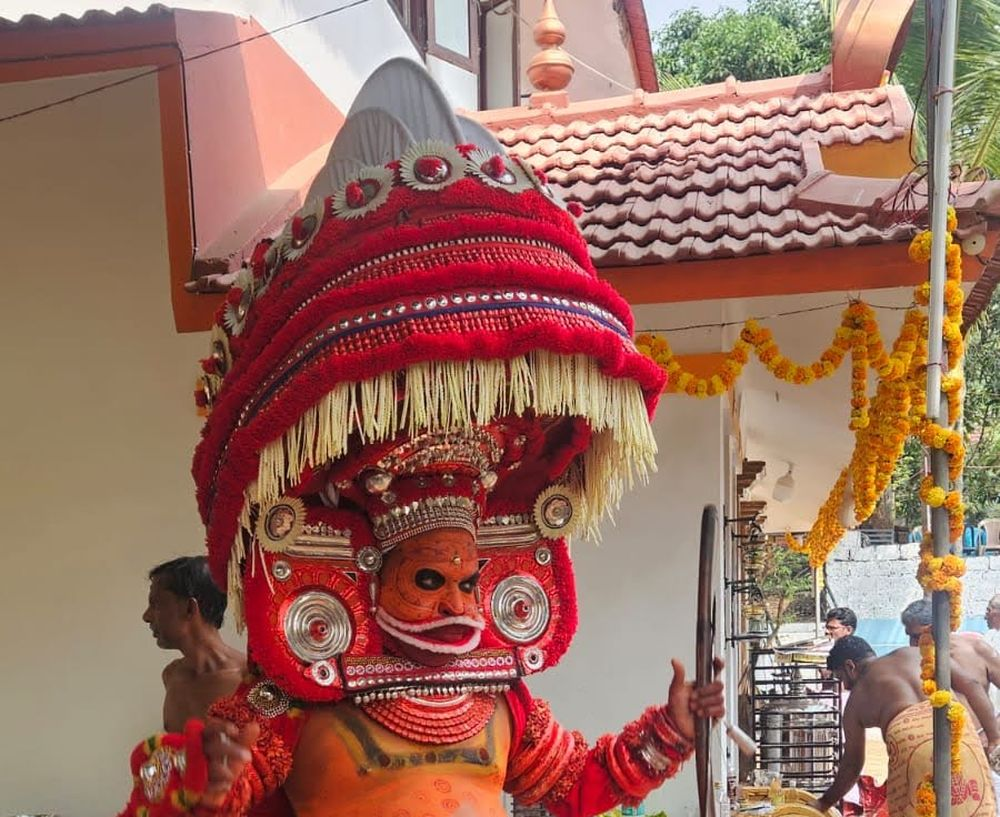
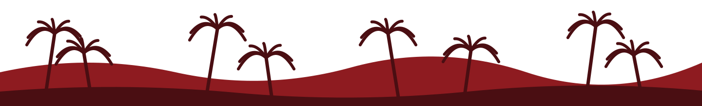

Voyages Theyyam accompagnés · Malabar du Nord, Kerala
Un rituel vivant, partagé avec respect.
Des voyages en petit groupe vers le plus ancien rituel vivant du Kerala, pensés autour de vous. Avec, si vous le souhaitez, un guide local qui ouvre les portes, explique chaque étape et veille à ce que vous soyez bien accueilli.
Fait avec chaleur dans le Malabar du Nord, Kerala · Powered by letsgoforacamp
Enracinés dans le Malabar du Nord
Gérés par des natifs du Malabar du Nord. Accueillis comme en famille.
Nous sommes une équipe originaire de Kannur et de tout le Malabar du Nord. Après huit ans de travail avec les familles et les villages de cette région, nous savons à qui demander, quand nous effacer et comment mettre un invité à l’aise.
Local, pas sous-traité
Notre équipe, ainsi que tout guide ou chauffeur que nous organisons, sont originaires du Malabar du Nord. Personne ne vous récite un texte.
Connus des familles
Les présentations passent par des personnes en qui les familles ont déjà confiance : vous êtes accueilli, pas simplement toléré.
Une vraie personne vous répond
Pas de paiement en ligne ni de centre d’appels. Notre équipe du Malabar du Nord répond sous deux jours ouvrés et reste joignable 24 h/24 une fois votre voyage réservé.
Nous protégeons le rituel
Nous ne publions jamais les dates ni les lieux des rituels, nous informons chaque voyageur des usages à respecter et nous suivons les règles de chaque sanctuaire en matière de photographie.
- LetsGoForACamp Travel and Innovation LLP
- [TOURISM REGISTRATION NO.]
- [GOOGLE RATING · REVIEW COUNT]
- [MEMBER OF TOURISM ASSOCIATION]
Deux façons de voyager
Rejoindre un groupe ou créer le vôtre
Départs en petit groupe
Partagez le voyage avec jusqu’à 8 voyageurs partageant vos centres d’intérêt. Les périodes de départ vous sont communiquées sur demande.
Demander un voyage en groupePrivé et sur mesure
Vos dates, votre rythme, vos centres d’intérêt, en famille, entre amis, en groupe thématique ou en solo. Nous le concevons avec vous.
Demander un voyage sur mesurePourquoi nous
Pourquoi voyager avec nous : le rituel est un acte de culte, et nous vous aidons à être un bon invité
Un accès organisé
Les rituels ont lieu dans des sanctuaires familiaux et sur les places des villages. Nous nous occupons des présentations et du moment, pour que vous soyez le bienvenu sans gêner.
Un guide local, si vous le souhaitez
En option. Sachez qui est la divinité, ce que signifie son histoire, et quand s’approcher ou rester en retrait.
Tout est pris en charge
Les rituels de nuit et les routes de campagne sont difficiles seul. Nous gérons hébergements, transferts, repas et le retour tardif.

Première fois ?
Qu’est-ce que le Theyyam ?
Un rituel vivant du nord du Kerala où la personne qui prend le kolam, après des heures de maquillage et d’habillage, est considérée comme devenant la divinité. Il en existe des centaines de formes, chacune avec sa parure, son chant et son histoire, gardées par les mêmes familles depuis des générations.
Voyages accompagnés
Voyages Theyyam accompagnés : choisissez jusqu’où aller
Les rituels exacts sont confirmés avec vous avant le paiement, car ils dépendent du jour.

Le voyage Patrimoine
Votre premier Theyyam, avec l’histoire qui l’accompagne.

Plongée dans le Malabar du Nord
Deux bases, plus de nuits, du temps avec les familles.

Voyage Artisanat & Parures
Du temps avec le fabricant de la parure, un musicien et un tisserand.
Cinq villes-étapes. Une côte de rituels.
Nous séjournons dans des villes confortables et rejoignons les rituels chaque soir, pour que vous dormiez bien et voyiez davantage.
- Kannur · tisserands, plages, transferts faciles
- Thalassery · ville fortifiée, cuisine et cricket
- Payyannur & Thaliparamba · le cœur du rituel
- Kanhangad · la porte du nord
Comment ça marche
- 1
Dites-nous votre projet
Mois, taille du groupe, centres d’intérêt. Deux minutes.
- 2
Nous composons le voyage
Une proposition sous deux jours ouvrés.
- 3
Nous confirmons les rituels
Plus près du départ, nous arrêtons les meilleures nuits.
- 4
Vous arrivez, nous accueillons
Hébergement et transferts sont prêts, et un guide si vous en avez choisi un.



“[TÉMOIGNAGE DE VOYAGEUR : une phrase sur ce que le guide a rendu possible]”
[Nom], [Pays] · Le voyage Patrimoine
Vos questions, nos réponses
Quand a lieu la saison du Theyyam ?
La saison principale va de fin octobre à mai. Nous vous indiquons les meilleures semaines lors de votre demande.
Puis-je y aller seul ?
Certains rituels sont ouverts, mais beaucoup sont des occasions familiales et les horaires sont difficiles à connaître. Un guide local ou un hôte qui connaît la famille vous aide à y assister avec respect.
Convient-il aux enfants et aux personnes âgées ?
Oui, avec une bonne préparation. Les rituels se prolongent tard et se vivent debout, nous adaptons donc le rythme et les places assises.
Puis-je prendre des photos ou filmer ?
Pas toujours. De nombreux sanctuaires interdisent photos et vidéos, certains pendant tout le rituel. Nous vous indiquons les règles de chaque lieu, et nous vous conseillons simplement d’être présent.
Prêt à rencontrer les dieux du Malabar ?
Dites-nous quand vous pouvez partir. Nous répondons sous deux jours ouvrés.
Demander un voyage